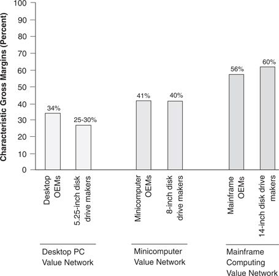

The definition of a value network goes beyond the attributes of the physical product. For example, competing within the mainframe computer network shown in Figure 2.2 entails a particular cost structure. Research, engineering, and development costs are substantial. Manufacturing overheads are high relative to direct costs because of low unit volumes and customized product configurations. Selling directly to end users involves significant sales force costs, and the field service network to support the complicated machines represents a substantial ongoing expense. All these costs must be incurred in order to provide the types of products and services customers in this value network require. For these reasons, makers of mainframe computers, and makers of the 14-inch disk drives sold to them, historically needed gross profit margins of between 50 percent and 60 percent to cover the overhead cost structure inherent to the value network in which they competed.
Competing in the portable computer value network, however, entails a very different cost structure. These computer makers incur little expense researching component technologies, preferring to build their machines with proven component technologies procured from vendors. Manufacturing involves assembling millions of standard products in low-labor-cost regions. Most sales are made through national retail chains or by mail order. As a result, companies in this value network can be profitable with gross margins of 15 percent to 20 percent. Hence, just as a value network is characterized by a specific rank-ordering of product attributes valued by customers, it is also characterized by a specific cost structure required to provide the valued products and services.
Each value network’s unique cost structure is illustrated in Figure 2.4. Gross margins typically obtained by manufacturers of 14-inch disk drives, about 60 percent, are similar to those required by mainframe computer makers: 56 percent. Likewise, the margins 8-inch drive makers earned were similar to those earned by minicomputer companies (about 40 percent), and the margins typical of the desktop value network, 25 percent, also typified both the computer makers and their disk drive suppliers.
The cost structures characteristic of each value network can have a powerful effect on the sorts of innovations firms deem profitable. Essentially, innovations that are valued within a firm’s value network, or in a network where characteristic gross margins are higher, will be perceived as profitable. Those technologies whose attributes make them valuable only in networks with lower gross margins, on the other hand, will not be viewed as profitable, and are unlikely to attract resources or managerial interest. (We will explore the impact of each value network’s characteristic cost structures upon the established firms’ mobility and fortunes more fully in chapter 4.)
Figure 2.4 Characteristic Cost Structures of Different Value Networks

Source: Data are from company annual reports and personal interviews with executives from several representative companies in each network.
In sum, the attractiveness of a technological opportunity and the degree of difficulty a producer will encounter in exploiting it are determined by, among other factors, the firm’s position in the relevant value network. As we shall see, the manifest strength of established firms in sustaining innovation and their weakness in disruptive innovation—and the opposite manifest strengths and weaknesses of entrant firms—are consequences not of differences in technological or organizational capabilities between incumbent and entrant firms, but of their positions in the industry’s different value networks.